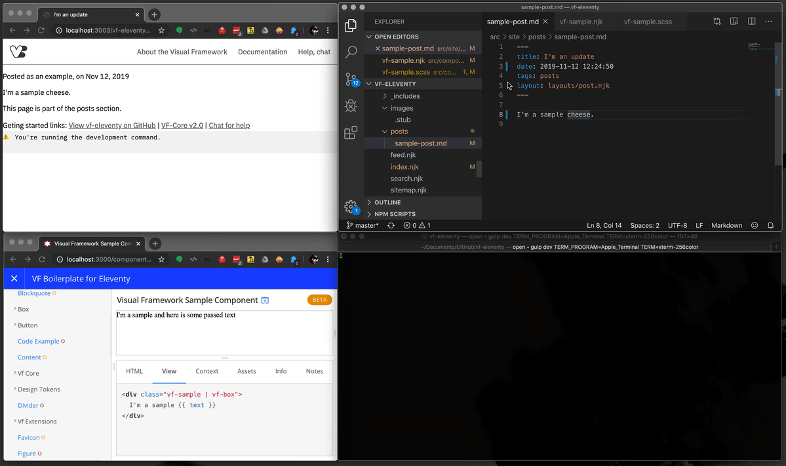
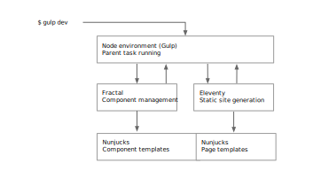

2019.11.12    Filed in: gulp, Eleventy, EMBL, Fractal, Visual Framework
Fractal and Eleventy: Getting static sites closer to the design system
For the Visual Framework 2.0 component system we recommend Eleventy for static sites: Eleventy sites get direct access to component templates with associated metadata and a focused component library.
This combo eases site building by giving developers visibility on Fractal templates and documentation in their particular install. The integration also allows project-level Fractal components that can extend core Sass and re-use component templates, with full access to Fractal {% render %} tags, context data, and other component metadata.
Features:
- Eleventy static sites
- Fractal components can be
npm install-ed - Fractal Nunjucks templates and component data
- Local project-level components and templates can be added, and run in the same Fractal environment
- Fractal web UI with local instance components, documentation
Heard enough? Try it out at visual-framework/vf-eleventy.
The two tools don't work like this by default, but I'll share how we've made it happen.
How it feels

A 16-second animated-GIF that shows how the Fractal components and Eleventy content are united.
Here's what's happening:
- Unified templating: Add a Fractal Nunjucks template to an Eleventy page
- A unified Eleventy-Fractal watch process: Update a Fractal Nunjucks template and Eleventy rebuilds
- Assets are also integrated: Update a component's Sass and gulp asks Eleventy to rebuild
How it works
For component management of the Visual Framework 2.0, we’ve used the Node JS-based Fractal — it ticks a lot of boxes for what we needed, including support for Nunjucks templating. That templating allows the Visual Framework component system to stay relatively agnostic of technology.
Eleventy is also Node JS-based and can use Nunjucks templating.
We were really excited by this in initial discussions as we can use similar build environments and templates across our component library and static-site generator.
Here's a high-level diagram:

When the developer runs gulp dev it allows Fractal and Eleventy to run as child process of gulp, sharing a Nunjucks environment.
There were a couple of gotchas that we had to work around, if you're interested in how we got there, read on, otherwise I suggest you just try out the vf-eleventy boilerplate.
Making it happen
All the same, but not
When attempting to achieve our flow, we quickly found issues as we weren't able to directly use our npm install-ed components in Eleventy for two reasons:
Eleventy wants to look in a single place for our templates and we want to individually install components from
npma la:yarn add --dev @visual-framework/vf-buttonWe could work around this by some fancy copy-and-paste task that scans
node_modulesand copies**/*.njkto the directory used by Eleventy. Unpleasant, but possible.The Nunjucks template syntax isn’t exactly the same between the Fractal and Eleventy. The United States Web Design System also uses Fractal and notes:
Components that reference other components use a Fractal-specific
{% render %}tag that will either need to be implemented in other environments or replaced with the appropriate{% include %}tags.Which means using nested container-level templates — like using a
logocomponent inside apage-headertemplate — is out, unless you have one set of templates for Fractal and one for "generic" Nunjucks environments. While replacingrenderwithincludemight seem trivial at first, there are issues around path lookups and other whack-a-mole issues with other Njk tags.
Maintaining two sets of templates adds significant overhead and a large risk for typos and tests, it would also prevent us from being able to yarn add components.
But there's a way to sidestep both of these issues.
Playing nice
We can avoid both of these by resolving Eleventy's expectation to run in a separate Node process.
Fractal has already prepared a list of all the components (Issue 1) and made available the custom Nunjucks templates (Issue 2), if we can get Eleventy to use (and extend) the same Node process as Fractal's Nunjucks environment we'll get all the benefits outlined above.
To do this we’ve had to make a couple tweaks to how Eleventy executes; here's a summary:
- We forked Eleventy's
cmd.jsto so we can use it as a child task (i.e.elev.write().then) - Gulp triggers the build of Fractal and then Eleventy
- Utilise Eleventy’s watch and refresh commands for local development
- Send variables to Eleventy’s JavaScript data files from Gulp (or other Node JS tasks)
I took a deeper look at this approach in a separate blog post.
Links
I'm Ken Hawkins
I do web architecture, holistic design, and a bit of UX and development.
If you want to learn more about me and what I do head to the front page, or:
- üê¶ Twitter @khawkins98
- üì¨ RSS feed
- üìà LinkedIn
- ✉️ E-mail
- ✉️ khawkins98@gmail.com
This site is a playground üôà
What you're seeing was made with a combination 1 2 of the Foundation Framework, CSS/Sass, responsive design, Gulp, Panini static site generator, Markdown and some other stuff and then hosted through Travis CI and Github pages3.
In years past I would have likely made this site with Drupal, but for smaller sites with savvy editors I've been using static site combinations to simplify maintenance.